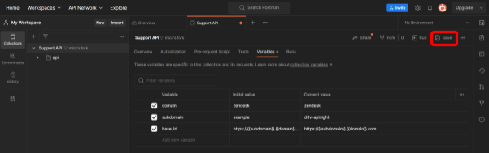
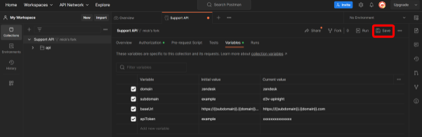
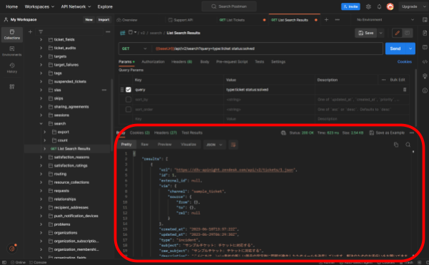
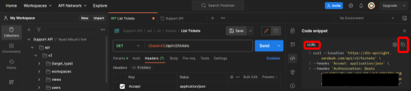

当ハンズオンでは、Zendesk の API を "Postman" というツールを使って実際に呼び出します。どのように API を呼び出せるのか体験することで、今後、ご自身のプログラムやサービスからも API を呼び出すことが容易になります。
ハンズオンの流れ
大きく以下のような流れになっています。
- Postman をセットアップ
- Postman にサインアップ
- ハンズオン用に Postman を設定
- Zendesk API の呼び出しを実践
- チケットの情報を取り出す
- チケットを検索する
- チケットに社内メモを付ける
- 後片付け
注意点
ハンズオンの参加にあたって、以下に注意してください。
- インターネットへ接続できる PC が必要です
- テキストは Google Docs および Google Spreadsheet で共有します。そのため PC は Google Workspaces のサービスへアクセスできる必要があります
- ブラウザのアドオンや PC のセキュリティ設定によっては Postman へのアクセスや Postman からの API の実行をブロックされる場合があります
- 当ハンズオンでは Zenlab 用に作成した Zendesk の Sponsored account (Zendesk から無償で使わせていただいている開発用のテストアカウント) を参加者に利用していただく想定です。自身、または自社の Zendesk アカウントを使用する場合は Postman の設定が少し異なりますので、適宜読み替えてください。
- このハンズオン資料は 2023 年 7 月時点の情報をもとにしています。最新の情報は各種公式ドキュメントを参照してください。
(参考) Postman とは
Postmanは、主にウェブサービスを開発するときに役立つツールです。ウェブサービスが正しく動作しているかをテストするために、特定の API リクエストを送信し、その結果を見ることができます。今回は Zendesk の API を体験するために用いますが、ウェブサイトからデータを取得するリクエストを送信し、データが期待通りに返ってきているかを確認するような使い方もできます。
(参考) API とは
このハンズオンテキストでは、API についての説明は割愛します。Zendesk API Night のイベントでは、API 概要についての説明を別途した後にハンズオンをする予定です。
Postman へサインアップ
以下のページへアクセスして、Postman へサインアップしてください。メールアドレス・ユーザー名・パスワードでアカウントを作るか、Google アカウントでサインアップします。
サインアップが完了すると以下のような Welcome メッセージが表示されます。ポップアップは閉じて次のステップへ進みます。
Zendesk API のリストを自分の環境へコピーする
(参考) やっていることの説明
API を呼び出すには URL のパスやメソッド、認証情報といった設定が必要です。Zendesk は、Zendesk の API を Postman で簡単に呼び出せるよう Zendesk の各種 API のリストを Postman の Collection として公開しています。
公開されている中の「Zendesk Support」の Collection を fork する (API のリストを自分の環境へコピーする) ことで、準備の大部分を省略します。なお、Collection は Postman の用語ですが、fork は GitHub などでも用いる用語です。
手順
以下の URL へアクセスします。
Zendesk Public API の Support API のページを開いていることを確認します。
"Fork" をクリックします。
"Fork Collection" をクリックします。
My Workspace (自分の環境) に "Support API" が fork できたことを確認します。のマークがあれば OK です。

(参考) やっていることの説明
API を呼び出す URL を指定します。Zendesk の URL は xxxx.zendesk.com (xxxx は会社毎に異なる) という形式です。この xxxx をサブドメインとも呼びます。
手順
Variables (変数) タブを開きます。
subdomain の Current value を書き換えます。ハンズオン用のアカウントを使う人は、運営から連携されたスプレッドシートに書いてある内容を入れてください。
Save をクリックして保存します。

(参考) やっていることの説明
API を呼び出すときの認証情報を設定します。Zendesk API の認証方法はいろいろあるのですが、今回のハンズオンでは「E メールアドレス」と「API トークン」を利用した Basic 認証を利用します。今回は解説しませんが、他の認証方式も合わせて学びたい場合は、以下のドキュメントを参照してください。
- https://support.zendesk.com/hc/ja/articles/4408831452954
- https://developer.zendesk.com/api-reference/introduction/security-and-auth/
手順
Variables (変数) タブの Add new variable のテキストボックスに apiToken と入力します。
Initial value に example、Current Value に API トークンを入力します。ハンズオン用のアカウントを使う人は、運営から連携されたスプレッドシートに書いてある内容を入れてください。
Save をクリックして保存します。

次に、Authorization (認証) タブを開きます。
Type を Basic Auth に設定します。
Username を設定します。ハンズオン用のアカウントを使う人は、運営から連携されたスプレッドシートに書いてある内容を入れてください。
Password には {{apiToken}} と入力します。
Save をクリックして保存します。
注意点
- Username の形式は example@example.com/token と、後ろに /token が付いています。これは Zendesk の API 認証でトークンを用いたい場合のお作法です。
- Authorization の Password に直接 API トークンを入力しても良いのですが、Postman の推奨に従って Variabiles を設定しています。
- 今回はハンズオンのため複数人で同じ API トークンを使っていますが、実際の運用においてはアプリケーション毎にトークンを分けることを推奨します。
(参考) 自社の Zendesk で API トークンを発行したい場合
今回はハンズオン用に E メールアドレスと API トークンを払い出しますが、今後自社で API トークンを用いた認証をしたい場合は、以下のドキュメントを参照してください。
エンドポイントと認証情報を設定したので、Zendesk Support の API を実行できます。ハンズオン用のアカウントを使う人へは、今回はライトエージェント権限を持った認証情報をいますので以下のドキュメントに書かれた操作ができます。
まずはチケットの一覧を取得してみましょう。
手順
左側のフォルダ階層から、Support API > api > v2 > tickets > GET List Tickets を探してクリックします。
external_id のチェックボックスを外して Send をクリックします。
画面の下側に結果が返ってくるのが分かります。
API の実行結果は JSON という形式で返却されます。
(応用) 返却された JSON を読み解く
JSON はアプリケーションにとっては読みやすい形式ですが、人間にとっては読みにくい場合もあります。実際の運用にあたってはアプリケーションから API を呼び出し、アプリケーションのなかで JSON から必要な情報を読み取ればと思いますが、ここではオンラインのツールの「JSON Editor Online」を使って JSON を読んでみます。なお、オンラインの JSON 読み込みツールを使うときは、セキュリティポリシーを十分に確認してください。今回は、入力したデータが運営元や第三者が見られないツールを選定しました。
以下の URL を開きます。
全画面モードにしておくと見やすいです。
先ほどの API 呼び出しで返却された Body のコピーボタンを押してください。
JSON Editor Online へ貼り付けます。
tree を選択することで見やすくなります。
たとえば上の例では tickets : [ 2 items という表示から、2件のチケットがあることが分かります。その下の 0 や 1 はリストの要素の番号です (プログラミングの世界では 0 から数え始めることが多いです)。
1 の要素の中を見ていきます。よく使う項目としては、以下のようなものがあります。
項目 | 説明 |
id | チケットの ID |
created_at | チケットの作成日時 |
subject | 件名 |
description | チケット中の最初のコメント |
status | チケットの状態 |
requester_id | チケットを作成したユーザーの ID |
assignee_id | チケットを割り当てられたエージェントの ID |
実際の運用では、API 呼び出しで返却された JSON から必要な情報をアプリケーションで取り出して活用します。
前回はチケットの一覧を表示しましたが、次はチケットを検索してみます。たとえば現在「オープン」状態のチケット一覧を取得して、必要な情報を整形して Slack 等へ通知する、などは良く作成するアプリケーションの例です。
Zendesk Support のコンソール画面で言うと、赤枠で囲った検索窓を使っているようなイメージです。
手順
左側のフォルダ階層から、Support API > api > v2 > search > GET List Search Results を探してクリックします。
sort_by と sort_order のチェックボックスを外します。
query の Value を以下のように入力し、Send をクリックします。これは、「解決済み」チケットを検索しています。
- type:ticket status:solved
なお、Zendesk の query の記法はやや複雑ですが、以下のドキュメントに解説があります。
画面の下側に結果が返ってくるのが分かります。

(参考) クエリストリングについて
API ではこのように、エンドポイントの末尾に ?xxx=yyy のような文字列が付くことがよくあります。これをクエリストリング (query string) と呼びます。REST API の
GET メソッドではクエリストリングで GET するときの条件を設定します。複数のクエリストリングもつけられます。たとえば今回はチェックボックスを外しましたが sort_by ではソート条件を設定できます。
Zendesk Support のコンソール画面で言うと、赤枠で囲ったように社内メモを保存しているようなイメージです。
手順
左側のフォルダ階層から、Support API > api > v2 > tickets > {ticket_id} > PUT Update Ticket を探してクリックします。
ticket_id を設定します。ハンズオン用のアカウントを使う人は、運営から連携されたスプレッドシートに書いてある内容を入れてください。
Body タブへ移動します。Response エリアを最小化しておくと見やすいです。
先ほどの検索は GET メソッドだったので query タブにてクエリストリングを用いてリクエストを表現しましたが、今回は PUT メソッドなので Body タブでリクエストを表現します。様々な入力項目がありますが、ここでは以下のように書き換えます。 (あなたの名前) の部分は書き換えてください。他に好きな Body にしてもかまいません。
```
{
"ticket": {
"comment": {
"body": "(あなたの名前) の社内メモです",
"public": false
}
}
}
```
Send をクリックして社内メモを記録します。画面の下側に結果が返ってくるのが分かります。先ほど Response エリアを最小化した人は広げてください。
plain_body に送信した内容が記録されているのが分かります。
当ハンズオンでは、Zendesk の API を "Postman" というツールを使って実際に呼び出しました。どのように API を呼び出せるのか体験することで、今後、ご自身のプログラムやサービスからも API を呼び出すことが容易になるかと思います。
あとかたづけ
当ハンズオンでは、API の認証情報を運営から発行しているので、参加者のあとかたづけは不要です。Postman も無料プランであれば、料金はかかりません。
運営から発行している API の認証情報は一定期間が経過した後に使えなくなる可能性があるのでご了承ください。
また、API の認証情報を自身で発行した場合は、自社のセキュリティポリシーに従って削除などを検討してください。以下のドキュメントの、API トークンを作成した画面から削除できます。
次のステップ
次のステップとしては、引き続き他の API を試したり、自社のプログラムから呼び出したりすることが考えられます。お使いのプログラミング言語や、使いたい API は様々だと思いますので、次ページ以降のセクションに Tips を載せておきました。
これらを参考に、Zendesk をさらに活用していきましょう。
今回は Postman を使って API の呼び出しを体験しましたが、実際の現場では Node.JS や Python などのアプリケーションから呼び出すことが多いと思います。アプリケーションの実行環境としてよく使うのは、ローカル PC や Google Apps Script (GAS)、AWS Lambda などです。
サンプルコードを表示する
- 呼び出したい API へ移動します(たとえば チケット一覧を表示する API なら、左側のフォルダ階層から、Support API > api > v2 > tickets > GET List Tickets を探してクリック)
- 右側の </> (Code) をクリックします。
以下のように、サンプルコードが表示されます。
もし Cookie といった文字列がある場合、Zendesk API では Cookie は不要なので削除します。Cookies をクリックして、Clear All Cookies をクリックします。
サンプルコードをコピーする
注意 1
このセクションは、お使いの環境によってはできない可能性があります
注意 2
サンプルコードには、Zendesk の認証情報が含まれます。特に GAS や AWS など外部の環境でプログラムを実行したり、コードを GitHub へ保存するような際は、認証情報の漏洩リスクに十分注意してください。安全な保管方法は、周りのエンジニアなどへ相談することをお勧めします。
手順
画像の cURL の部分を選択すると、プログラミング言語を選択できます。cURL を選択して、コピーします。

Mac の人、および Windows Subsystem for Linux (WSL) の人はターミナルへ貼り付けて実行します。
Windows (10 以降) でコマンドプロンプトを使っている人は、大変ですが、以下のように書き換えます。なお、Windows 10 の特定バージョンより古く、コマンドプロンプトで cURL を実行できない場合、このセクションは実施できないのでご了承下さい。
- メモ帳へ貼り付けます
- 行末の \ を削除して、改行をなくし、1 行にします
- シングルクォート (') をダブルクォート (") へ書き換えます
- コピーします (例: curl "https://example.zendesk.com/api/v2/tickets" --header "Accept: application/json" --header "Authorization: Basic xxxxxxxx )
- コマンドプロンプトへ貼り付けて実行します。
同様に、他の言語でも利用できます。冒頭の「注意」にも書いた通り、認証情報の取り扱いには十分注意してください。
GAS で利用したい場合の注意点
GAS で Zendesk API を呼び出したい場合、GAS の UrlFetchApp.fetch メソッドを使うことになります (詳細の説明は割愛します)。ハンズオン開催日時点では、Postman から UrlFetchApp.fetch メソッド形式のサンプルコードは作成できません。最近では Chat GPT が非常に優れているので、cURL のサンプルコードをコピーし、認証情報をマスクしたうえで変換してもらうことが考えられます。
API をプログラムからきちんと使おうとすると、今回触れなかったページネーションだったり、認証情報の使いまわしだったり、リクエスト数のリミットへの対応だったり、エラーハンドリングだったりと、考えることがたくさんあります。これらについて考慮されたサンプル実装が公開されていると、ユーザーとしてとても便利です。Zendesk ではいくつかのプログラミング言語で、API クライアントが公開されています。これらは主にコミュニティによってメンテナンスされています。詳細は以下のページを参照してください。
API をそのまま使うにしても、公開された API クライアントを使うにしても、使いたい API をスムーズに探せるようになると、その後の実装も簡単です。
Zendesk の管理画面から探す
こちらはやや邪道な方法ですが、個人的に探しやすいと思っているので紹介します。
Zendesk の管理画面からも、Zendesk の API を呼んでいます。API の利用が必要となる理由の一つに、管理画面の操作を自動化したいことが挙げられます。
- デベロッパーツールを起動します (Google Chrome + Windows の場合、Ctrl + Shift + i で起動)
- ネットワークタブを開きます
- 管理画面で特定の操作 (たとえば以下ではチケットの表示) をします
- api/v2 などでフィルタすると探しやすいです
- 表示された行の中から、それらしい API 呼び出しを探します。たとえば例では ID が 2 であるチケットを表示しているので、2 を探しました。ブラウザの URL のパスも、 API のパスに呼応していることもあるのでヒントになります
- ヘッダータブで、呼び出し方法を確認します
- レスポンスタブでは、呼び出し結果が表示されています
API リファレンスから探す
こちらが正統な方法です。以下に Zendesk が API 一覧を公開していますのでこちらから目的の API を探します。
たとえばチケットに関する API は以下のページにまとまっています。
すべて英語ですが、使い方や注意点もまとまっているので、特にプログラムから呼び出す前には一度目を通しておくことをお勧めします。
Postman から探す
API リファレンスでは API の実行例・結果例の表示はありますが、実環境への実行はできません。また API の検索はしづらいかもしれません。Postman にはフィルタ機能がありますので、検索・実行が一度にできて便利です。↓の画像では comments に関係している API をフィルタしています。慣れると、API 名を類推してフィルタできるようになります。